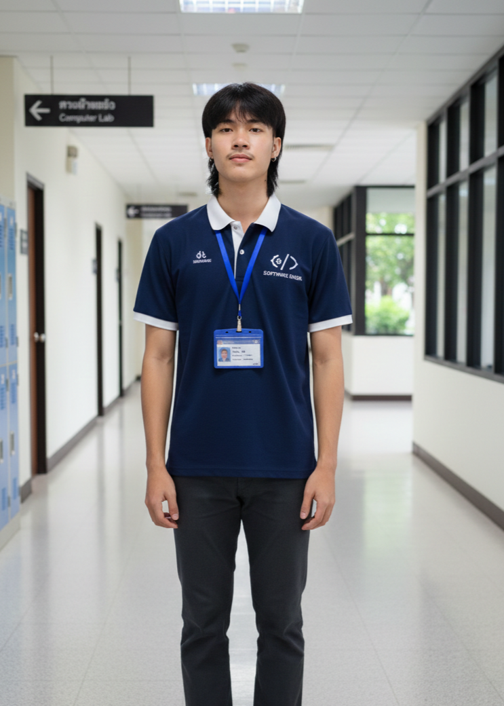
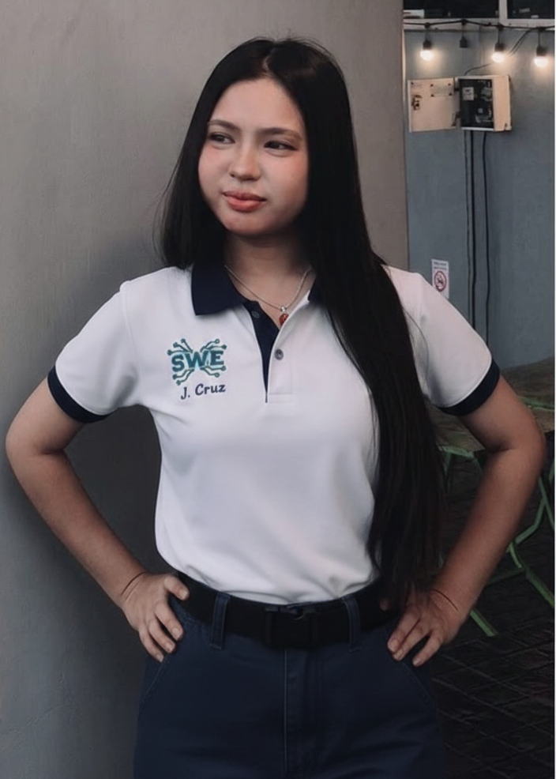

Our Story
จิตวิญญาณแห่งธนบุรี
"โครงการอนุรักษ์มรดกดิจิทัลเพื่อชุมชนริมคลองบางกอกน้อย"
The Creators
คณะผู้จัดทำ

Project Manager / Developer
วางโครงสร้างระบบและจัดการฐานข้อมูลมรดก
นายตะวัน ศิริพันธ์
Lead Developer
UI/UX Designer
ออกแบบประสบการณ์และส่วนติดต่อผู้ใช้ดิจิทัล
นายปัฐวีกานต์ แสงเทียนฤกษ์ชัย
Visual Architect

System Analyst
วิเคราะห์ข้อมูลและรวบรวมมรดกทางประวัติศาสตร์
นางสาววัชรธิดา ผิวงาม
Data Researcher